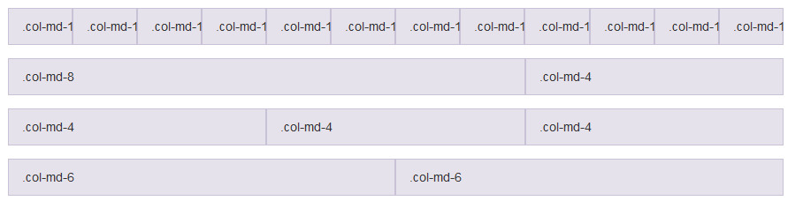

Instalation
Follow the steps below to get started with your Site Template:
- Open the Package/auto_zoon_files Folder to find all the Templates Files
- You will need to Upload these files to your Web Server using FTP in order to use it on your Website.
- Make sure you upload the required files/folders listed below:
- auto_zoon_files/css - Extra Stylesheets Folder
- auto_zoon_files/images - Images Folder
- auto_zoon_files/js - Javacripts Folder
- auto_zoon_files/fonts - Main webfonts File
- auto_zoon_files/index.html - Index File/Homepage
The other files can be used according to your preferences. You're now good to go..! Start adding your Content and show off your Brand New Beautiful Website in style
Grid
Using a single set of .col-md-* grid classes, you can create a basic grid system that starts out stacked on mobile devices and tablet devices (the extra small to small range) before becoming horizontal on desktop (medium) devices. Place grid columns in any row.
we use multipul grid in Auto Zoon template

HTML Structure
Auto Zoon follows a simple coding structure. here is the sample:
<!DOCTYPE html> <html lang="en"> <head> <!-- Your Stylesheets, Scripts & Title ============================================= --> ... </head> <body> <!-- The Main Wrapper======== --> <!-- Header ============================================= --> <header"> ... </header> <!-- Site Content ============================================= --> <section id="ID_NAME"> <div class="container clearfix"> ... </div> </section> <!-- Footer ============================================= --> <footer> <div class="container"> ... </div> </footer> </body> </html>
Nav-Bar
Auto Zoon have coded a Simple Nav-Bar also, you can set the structure as below
<nav class="navbar navbar-default navbar-sticky bootsnav">
<div class="container">
<div class="navbar-header">
<button type="button" class="navbar-toggle" data-toggle="collapse" data-target="#navbar-menu">
<i class="fa fa-bars"></i></button>
<a class="navbar-brand" href="#brand"><img src="LOGO_ADDRESS" class="logo" alt=""></a></div>
<div class="collapse navbar-collapse" id="navbar-menu">
<ul class="nav navbar-nav navbar-right" data-in="fadeInDown" data-out="fadeOutUp">
<li><a href="#">Home</a></li>
<li class="dropdown">
< href="#" class="dropdown-toggle" data-toggle="dropdown">Dropdown</a>
<ul class="dropdown-menu">
<li><a href="#">text</a></li>
<li><a href="#">text</a></li>
...
</ul>
</li>
</ul>
</div>
</div>
</div>
</li>
</ul>
</nav>
Owl Slider
Set index page banners you can set the structure as below of owl slider
http://owlgraphic.com/owlcarousel/
Revolution Slider
Set index page banners you can set the structure as below of revolution slider
https://www.themepunch.com/
Smooth Scrolling
Auto Zoon enables Smooth Scrolling on Windows Desktop PCs for a Smooth experience. You can enables it by simply adding the .wow and .fadeIn(transition class name) in any tag.
Page Loading Transitions
You can show Interactive loaders to your Visitors while the Pages of you Website loads in the background & then Reveal your Pages with CSS3 Transitions. Page Loading Transitions are enabled by default. To disable the Transition, you can simply remove the .loader
Changing Fonts
Change your Fonts on the Fly as we have included a css/style.css file to manage the custom fonts you include with ease. By default, Auto Zoon uses 2 type Fonts namely: Raleway, Opensans from the Google Fonts Library. You can find the Linking to the Font Files in the head tag of all the .html files.
<link href="https://fonts.googleapis.com/css?family=Roboto:100,300,400,500,700" rel="stylesheet" type="text/css" />
In order to change the Fonts, you will need to Edit the Above Links with your Custom Font if you plan to use a Google Font or Remove it complete if you plan to use a Self Hosted font. Here is an Example for using Self Hosted Fonts.
Maps
To set map in any where just simply add this,
<div id="map"></div>
Footer
For setting the copyright message, usecopy-right tag.
<footer id=""footer>
<footer class="container">
<div class="col-md-4 col-sm-4 col-xs-12">
<div class="footer_detail">
--------
</div>
</div>
<div class="col-md-4 col-sm-4 col-xs-12">
<div class="footer_detail">
--------
</div>
</div>
<div class="col-md-4 col-sm-4 col-xs-12">
<div class="footer_detail">
--------
</div>
</div>
</div>
</div>
<div class="footer_bottom">
<div class="row">
<div class="col-md-6">
<div class="copyright">
</div>
</div>
<div class="col-md-6">
< class="socialicons">
<li>------ </li>
.......
</div>
</div>
</div>
</div>
</footer>
What's included
Once you download the template, you can see a folder with several files and sub folders. You can read description of some important files in continue.
-
- Bootstrap.min.css Minified version of all required
bootstrapfiles - font-awesome.min.css Minified version of all required
font-awesome / Glyphiconsfiles - owl.carousel.css Minified version of all required
Owl Sliderfiles - animate.min.css Minified version of all required
Animationfile - bootsnav.css Minified version of all required
Main Nav-barfile - setting.css Minified version of all required
Revolution Sliderfile - hero_slider.cssAll custom coding in this file
Hero Sliderfile - product-tab.css Minified version of all required
Tabsfiles - reset.css Minified version of all required
Reset cssfiles - owl.transitions.css Minified version of all required
Animationfile - jquery.fancybox.css Minified version of all required
fancyboxfile - style.cssAll custom coding in this file
custom codingfile
- Bootstrap.min.css Minified version of all required
- fonts
- FontAwesome http://fortawesome.github.io/Font-Awesome
- Open Sans https://fonts.google.com/specimen/Open+Sans?selection.family=Open+Sans
- Raleway https://fonts.google.com/?query=raleway&selection.family=Raleway
- Images
- JPG / PNG All Images demo images and replace all images with your original images
-
js
- bootstrap.min.js bootstrap3+ version of all required Javascript files
- jquery.2.2.3.min.js jquery version of all required jquery files
- owl.carousel.min.js Minified version of all required slider Javascript files
- jquery.counterup.js Minified version of all required Counter Javascript files
- gmaps.js Minified version of all required Maping Javascript files
- jquery.themepunch.revolution.min.js.js Minified version of all required Revolution Slider Javascript files
- jquery.themepunch.revolution.min.js Minified version of all required Revolution Slider Javascript files
- jquery.themepunch.tools.min.j Minified version of all required Revolution Slider Javascript files
- revolution.extension.layeranimation.min.js Minified version of all required Revolution Slider Javascript files
- revolution.extension.navigation.min.js Minified version of all required Revolution Slider Javascript files
- revolution.extension.parallax.min.js Minified version of all required Revolution Slider Javascript files
- revolution.extension.slideanims.min.js Minified version of all required Revolution Slider Javascript files
- revolution.extension.video.min.js Minified version of all required Revolution Slider Javascript files
- custom.js Minified version of all required custom Javascript files
We just included layouts files for your start point. You should choose one of those and start customizing components such as navbar, banner, sidebar and footer to make a starter file for your documentation. You can access to all of the available files in "Documentation" or "src" folder.
CSS
Once you download the template, you can see a folder with several files and sub folders. You can read description of some important files in continue.
- Bootstrap.min.css
http://getbootstrap.com - font-awesome.min.css
http://fortawesome.github.io/Font-Awesome - owl.carousel.css
http://www.owlcarousel.owlgraphic.com - animate.min.css
https://daneden.github.io/animate.css - bootsnav.css
http://www.jqueryrain.com/?J_ndwmn6 - settings.css
https://revolution.themepunch.com/free-slider-exchange
js
Once you download the template, you can see a folder with several files and sub folders. You can read description of some important files in continue.
- jquery-2.1.4.js
https://jquery.com - bootstrap.min.js
http://getbootstrap.com - owl.carousel.min.js
http://www.owlcarousel.owlgraphic.com - jquery.fancybox.js
http://fancybox.net - bootsnav.js
http://www.jqueryrain.com/?J_ndwmn6 - jquery.counterup.js
https://github.com/bfintal/Counter-Up - gmaps.js
https://hpneo.github.io/gmaps - jquery.themepunch
https://revolution.themepunch.com/free-slider-exchange
Images
Once you download the template, you can see a folder with several files and sub folders. You can read description of some important files in continue.
http://www.freeimages.com/https://www.rakenapp.com/https://www.credibly.com
Note:
Preview images are not included in the download package.